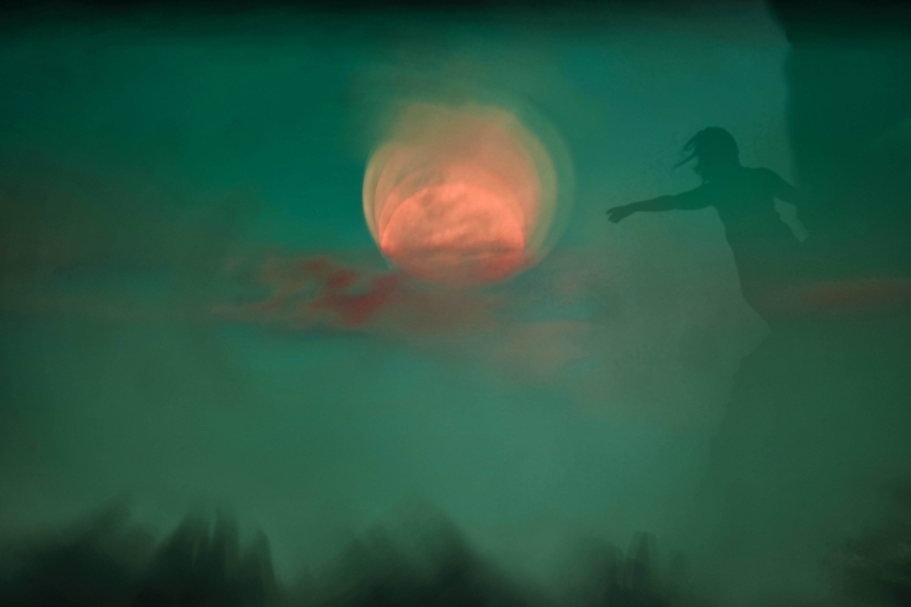

С научной точки зрения, осознанные сновидения — это такое состояние мозга, в которое он входит во время фазы, так называемой стадии быстрого движения глаз (БДГ-фаза). Активная БДГ-фаза длится обычно 10-30 минут и наступает через каждые 60-90 минут на протяжении всей ночи (четыре или пять раз за ночь).
Вообще, фаза проходит 6 циклов:
1. Засыпание. Оно запускает физиологические механизмы сна.
2. Медленный легкий сон. Все вегетативные процессы в нашем организме замедляются.
3. Медленный глубокий сон (NREM). Он «отрезает» нас от мира: мускулатура и сердце отдыхают.
4. Медленный парадоксальный сон. Эта фаза практически идентична предыдущей и готовит наступление следующей фазы.
5. Быстрый сон(REM). Мимика оживляется, глаза под веками начинают двигаться.
Нас интересует 2 цикла, медленная фаза сна (NREM-сон) и быстрая (REM-сон или БДГ-фаза):
— медленная фаза длится от 1.5 до 2 часов;
— быстрая фаза длится от 10 до 30 минут;
— фазы чередуются между собой и с каждым циклом, время быстрой фазы увеличивается, а медленной сокращается;
— после полной фазы (1.5-2 часа), мы просыпаемся, чаще всего мы это не помним.
Одно из главных отличий фаз друг от друга — разная активность мозга, которую визуально можно проследить в волнах на ЭЭГ. Другое различие быстрого и медленного отражено в английских названиях REM и NREM – наличие и отсутствие быстрых движений глаз.
При быстрой фазе сна мы и наблюдаем все сновидения, за одну фазу мы можем сменить 1-5 локаций сновиденных сюжетов.
В фазе глубокого сна просыпаться тяжелее всего. К пробуждению не готовы ни тело, ни сознание. В мозге в это время происходят сложные нейрохимические процессы, которые лучше не прерывать.
Во время легкого сна просыпаться достаточно просто. В это время тело готово к бодрствованию, и все мозговые стабилизирующие процессы завершены. Тем не менее хроническая нехватка быстрого сна очень плохо сказывается на здоровье.
Человек проводит во сне треть своей жизни. Если брать среднюю продолжительность жизни и средний сон в 8 часов, то мы спим 24-27 лет. Только представьте, 24 года во сне. Мы просто умираем на некоторое время, а затем снова оживаем, иногда помня смутные образы и иррациональные события, происходившие во время нашей маленькой смерти. Осознанное сновидение даёт нам возможность взять под контроль ту тёмную область, в которой мы регулярно пропадаем. И если время бесценно, то выгода очевидна.
Люди, которые решили заняться сновидениям, не должны строить иллюзий начитавшись эзотерической литературы. На первых порах, а это от 3 и до бесконечно месяцев, стоит рассчитывать на такие возможности:
— моделирование встреч с «желанными, но недоступными или труднодоступными людьми» (например, знаменитостями или умершими родственниками)
— реабилитационные работы людей с инвалидностью;
— возможность отработать физиологические навыки: боевые искусства, йога, танцы, игры на гитаре (с нуля вы на гитаре во сне не научитесь, к примеру, если нет никакого базового навыка);
— получать разные земные удовольствия;
— работать с фобиями, страхами;
— убрать ночные кошмары:
— познать себя глубже, чем в реальном мире;
— работать со своими психологическими проблемами.
Люди приходят к осознанным сновидениям из-за разной мотивации. Для некоторых осознанные сновидения — способ испытать трансцендентный опыт, который недоступен без долгих практик медитаций или психоделических средств. Кто-то просто хочется испытывать невероятные ощущения от полетов, новых ощущений и в целом чувства бога. Некоторые же люди воспринимают осознанные сновидения в мистическом ключе, с невероятным полем возможностей, так ли это, каждому из вас предстоит узнать на себе.
Представьте себе абсолютно реальный мир: асфальт твёрдый. На нём оседает пыль, небо синее, по нему плывут облака, дует лёгкий ветерок, неся какие-то запахи, слышится пение птиц. Всё реально, всё можно потрогать, попробовать, ощутить. Но это сон. Пожелав, в нём можно взлететь. Можно разбить стену дома одним ударом. Это полноценная модель реальности, в которой возможно практически всё. А если посмотреть дальше? Что там, за горизонтом? Насколько велико сновидение? А если вылететь в космос? А есть ли тут что-нибудь реальное? А если? Возникает куча вопросов. И всё это практически неизведанный мир, в котором можно сделать ещё много открытий, среди которых вполне могут оказаться те, которые принесут практическую пользу и вне сновидения. Представляете, какие перспективы? И всем этим можно заниматься, не вставая с постели. Днём вы увлечены своими делами, а ночью начинаете вы и открываете новые миры.
Для начала нужно поработать над своим мироощущением. Вы на подсознательном уровне должны понять, прочувствовать, что сон — это не бездонная пропасть, куда вы обморочно сваливаетесь при засыпании. Чтобы стать его полноценным пользователем сновидений придётся потрудиться.
Первое в целом, о чем надо понимать, вы не выучитесь осознаваться себя, если не поставите конкретные цели для чего вам это. Конечно это не говорит о том, что вы не сможете управлять сновидениями, сможете, но это будет короткий и не качественный опыт. Максимум полетаете во сне пару минут, а потом выброс.
Нужна точная цель, первая и не последняя. Для чего вы хотите осознаться во сне. Нужна мотивация, азарт и любопытство. Сразу скажу, что ставить цели а-ля полетать, пообщаться с умершими, летать в космосе — не подходят. Почему? Потому что маловероятно, что у вас есть осознанный подобный опыт. Поэтому нужно заранее правильно сформулировать свои цели.
Можно даже прямо на бумаге выписать их, обязательно включив детальное описание места, окружения, персонажей, желаемых событий, что вы будете делать в этом месте. Чем точнее и детальнее, тем надежнее — в целом это программирование сновидений, одна из самых простых техник осознаться, правда не всегда срабатывает, но работает же :). Затем нужно развить в мозгу ту область, которая отвечает за обмен между памятью повседневной и памятью сновиденной. А делается это постоянными тренировками по вспоминанию своих снов.
ВАЖНО! Не воспринимать осознанные сновидения как новый вид работы или занятий, это должно стать увлекательные приключением для вас, игрой. Чем серьезней вы будете относиться к этой практике, тем меньше шанс получить результат.
Есть разные техники: прямые и непрямые входы в сновидения, осознания себя во сне, техники разделения и так далее. В целом, если подходить ответственно к практике, то лучше иметь под рукой наставника, который поможет избежать ошибки и направит в нужном направлении. У осознанных сновидений есть разные фишки и примочки, о которых мало кто рассказывает почему-то, хотя в совокупности такие мелочи составляют большой пласт работы.
На нашем сайте мы учим разным методикам развития осознания, как в жизни, так и в сновидениях. Тема осознанных сновидений очень мало раскрыта, хоть в этом лежит огромный потенциал. Предлагаю стать одним из участников изучения этого феномена и привнести в этот мир изменения в которых так сильно нуждается человечество.